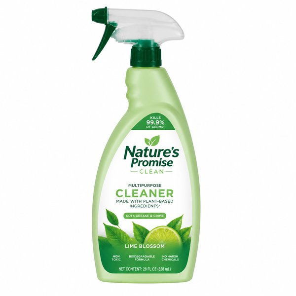
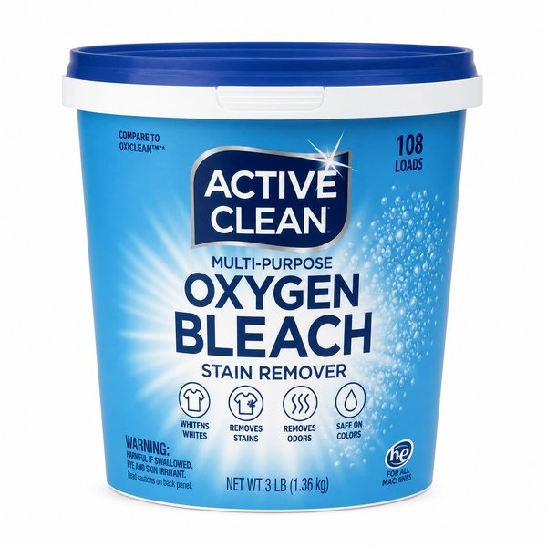
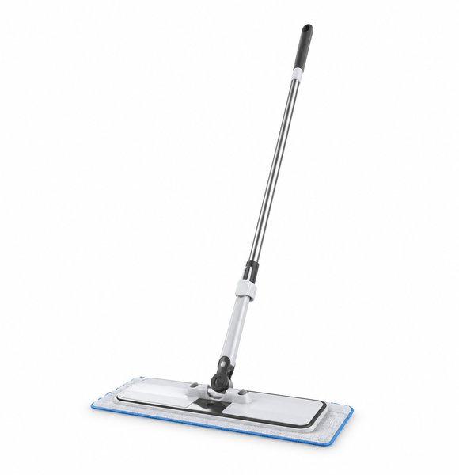
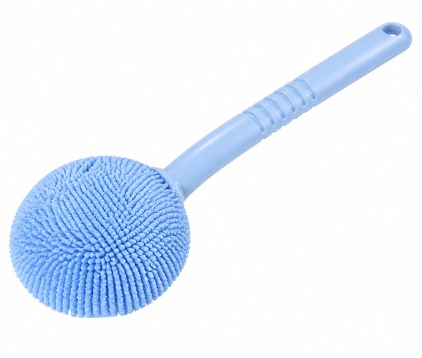
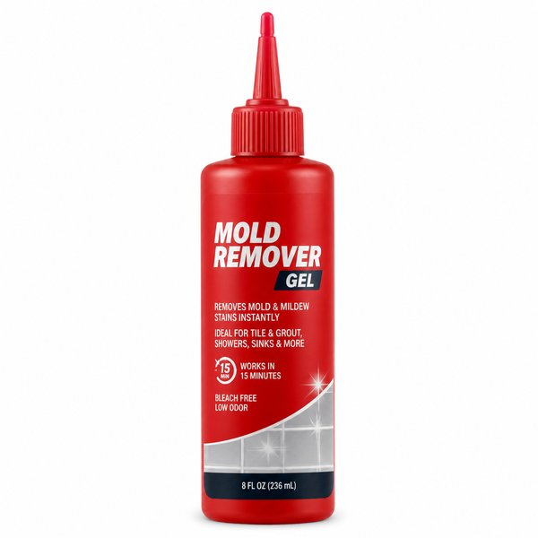
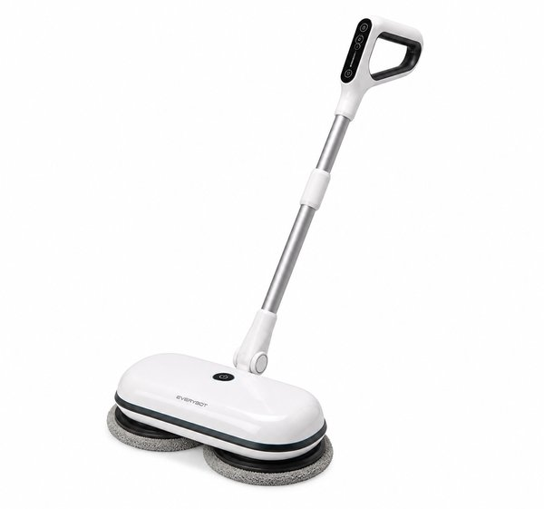
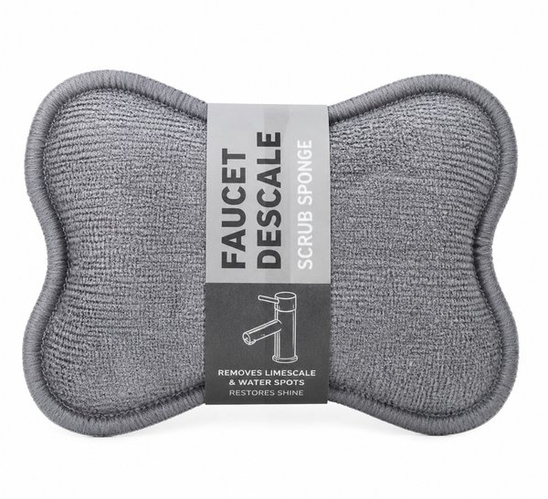
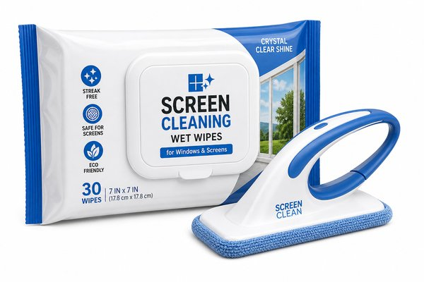
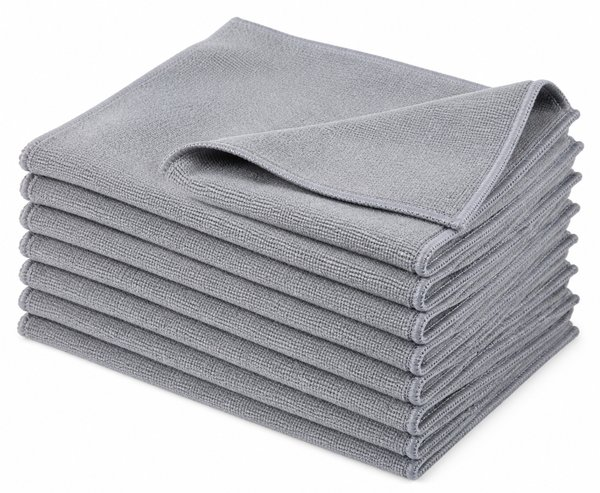

【2026年最新】年末大掃除が劇的にラクになる！時短掃除グッズ・便利家電おすすめ10選
1年の汚れを一気に落とす年末の大掃除。油でギトギトの換気扇、お風呂の頑固な水垢やカビ、窓や網戸のホコリなど、腰を据えて掃除しようとすると丸一日つぶれてしまいますよね。
「ゴシゴシ擦る力仕事を減らしたい」「短時間でプロ並みにピカピカに仕上げたい」という悩みは、専用の便利洗剤や電動アイテムを取り入れるだけで一気に解決します。
本記事では、共働きで掃除に時間をかけられない編集部が実際に使って「掃除革命が起きた！」と実感した、年末大掃除が劇的にラクになる神掃除グッズ＆便利家電10選をご紹介します。
- おすすめ10選 スペック・特徴比較表
- BEST 1｜スチームクリーナー SC 2 EasyFix プレミアム
- BEST 2｜ウタマロ クリーナー 400ml 多目的住宅用洗剤
- BEST 3｜オキシクリーン EX 802g 粉末酸素系漂白剤
- BEST 4｜クイックルワイパー 立体吸着ウエットシート STRONG 24枚入
- BEST 5｜バスボンくん はっ水抗菌 お風呂場丸ごとクリーナー
- BEST 6｜カビキラー カビ取りジェル 100g ピンポイント密着
- BEST 7｜コードレス電動回転モップクリーナー 充電式自走式
- BEST 8｜蛇口まわりの水垢落とし 極細ダイヤモンドシート
- BEST 9｜激落ちくん 網戸用クリーナー ウェットシート＆専用ハンドル
- BEST 10｜極上マイクロファイバークロス 窓・鏡・家具用 3枚組
- 🎁【読者限定】完全無料で試せる人気サービス
- まとめ：生活をラクにする最初の一歩
| 順位 | 商品名 | ブランド | 最大の特徴・おすすめ理由 | 総合評価 |
|---|---|---|---|---|
| BEST 1 | スチームクリーナー SC 2 EasyFix プレミアム | KARCHER（ケルヒャー） | 高温スチームで頑固な油汚れが一瞬で溶けて拭き取るだけ | 4.9 ★ |
| BEST 2 | ウタマロ クリーナー 400ml 多目的住宅用洗剤 | 東邦（TOHO） | 中性なのに油汚れも水垢も驚くほどしっかり分解 | 4.9 ★ |
| BEST 3 | オキシクリーン EX 802g 粉末酸素系漂白剤 | OXICLEAN（オキシクリーン） | 放置しておくだけで汚れが浮くため擦り洗いの労力がゼロ | 4.8 ★ |
| BEST 4 | クイックルワイパー 立体吸着ウエットシート STRONG 24枚入 | 花王（Kao） | 強力な洗浄液を含んでおりキッチンの油ハネ床もスッキリ | 4.8 ★ |
| BEST 5 | バスボンくん はっ水抗菌 お風呂場丸ごとクリーナー | 山崎産業（CONDOR） | 水だけで洗えるので洗剤を使わずササッと日常掃除ができる | 4.8 ★ |
| BEST 6 | カビキラー カビ取りジェル 100g ピンポイント密着 | ジョンソン（Johnson） | 高粘度ジェルが垂直の壁でも垂れずにカビの奥まで浸透 | 4.7 ★ |
| BEST 7 | コードレス電動回転モップクリーナー 充電式自走式 | アイリスオーヤマ | 高速回転で手拭き雑巾がけの何倍も強力に汚れを落とす | 4.8 ★ |
| BEST 8 | 蛇口まわりの水垢落とし 極細ダイヤモンドシート | マーナ（marna） | 洗剤を使わず水だけで頑固な白いうろこ水垢がすっきり落ちる | 4.8 ★ |
| BEST 9 | 激落ちくん 網戸用クリーナー ウェットシート＆専用ハンドル | レック（LEC） | 網戸を外したり水を撒いたりする重労働が不要で手軽 | 4.7 ★ |
| BEST 10 | 極上マイクロファイバークロス 窓・鏡・家具用 3枚組 | そうじの神様（K-PRO） | 繊維残りや拭き筋が出ずプロ級の鏡面仕上げが可能 | 4.9 ★ |
スチームクリーナー SC 2 EasyFix プレミアム

約100℃の高温スチームで、油汚れ・皮脂汚れ・カビを洗剤なしで浮き上がらせて除菌する大人気スチームクリーナー。換気扇の油膜、キッチンのコンロ周り、フローリングの黒ずみ、浴室の床までこれ1台で家中ピカピカになります。
- 高温スチームで頑固な油汚れが一瞬で溶けて拭き取るだけ
- 化学洗剤を使わないので小さな子どもやペットのいる家庭も安心
- 多彩なアタッチメントで床・窓・サッシ・水回りまでマルチ対応
- 立ち上がり（加熱）までに約6分程度時間がかかる
ウタマロ クリーナー 400ml 多目的住宅用洗剤

コンロの油汚れ、シンクの水垢、壁の手垢、窓ガラスまで家中の汚れをこれ1本で落とせる中性住宅用クリーナー。アミノ酸系洗浄成分で素手でも使えるほど肌に優しく、爽やかなグリーンハーブの香りで掃除が楽しくなります。
- 中性なのに油汚れも水垢も驚くほどしっかり分解
- 素手で使えてツンとした強い刺激臭が一切ない
- キッチン・お風呂・トイレ・家具まで家中で活躍
- 頑固に焼き付いた古い焦げ付きには専用のアルカリ洗剤が必要
オキシクリーン EX 802g 粉末酸素系漂白剤

SNSで大ブームの「オキシ漬け」の定番。お湯に溶かして換気扇パーツ、五徳、お風呂のフタや椅子を数時間放置するだけで、擦らなくても汚れやヌメリがツルンと剥がれ落ちます。界面活性剤配合のEXタイプは洗浄力が段違いです。
- 放置しておくだけで汚れが浮くため擦り洗いの労力がゼロ
- 塩素系と違ってツンとした臭いがなく衣類のシミ抜きにも使える
- 大容量で年末の大掃除から日々の洗濯まで長く使える
- 40〜60℃のお湯でしっかり泡立てて溶かす必要がある
クイックルワイパー 立体吸着ウエットシート STRONG 24枚入

フロア用ワイパーに取り付けるだけで、ベタベタした油汚れや皮脂汚れ、ホコリを丸ごと拭き取る超強力ウェットシート。床のベタつきが驚くほどサラサラになり、雑巾がけの重労働から解放されます。
- 強力な洗浄液を含んでおりキッチンの油ハネ床もスッキリ
- 両面使えて使い捨てなので雑巾を洗って絞る手間が一切不要
- フローリングだけでなく玄関のたたきや網戸にも使用可能
- 1枚あたりの単価が一般的なドライシートより高め
バスボンくん はっ水抗菌 お風呂場丸ごとクリーナー

極細のアミ目繊維が水だけでヌメリや石鹸カスをからめ取るロングセラー浴室ブラシ。伸縮ハンドルで天井や壁の高いところ、浴槽の底まで腰をかがめずに楽な姿勢のままスイスイ掃除できます。
- 水だけで洗えるので洗剤を使わずササッと日常掃除ができる
- ロング柄が伸びるため腰や膝を痛めず浴槽全体を洗える
- 丸いヘッドが角やすき間にもしっかりフィット
- 頑固なカルシウム水垢にはクエン酸や水垢用洗剤の併用が必要
カビキラー カビ取りジェル 100g ピンポイント密着

お風呂のゴムパッキンやタイルの目地に深く入り込んだ黒カビに、超高粘度ジェルがしっかり密着。スプレータイプのように垂れ落ちないため、液だれしやすい壁面やすき間のカビを根こそぎ撃退できます。
- 高粘度ジェルが垂直の壁でも垂れずにカビの奥まで浸透
- 先端ノズルが細くパッキンや目地にピンポイントで塗れる
- 塩素系特有のツンとした臭いが従来のスプレーより控えめ
- 塗布後に15〜30分程度放置する時間が必要
コードレス電動回転モップクリーナー 充電式自走式

2枚の円形モップパッドが毎分約200回転し、力を入れずに軽く滑らせるだけで床の皮脂汚れや食べこぼしを水拭きできるコードレスモップ。自走式なので片手でスイスイ進み、拭き掃除の疲れがゼロになります。
- 高速回転で手拭き雑巾がけの何倍も強力に汚れを落とす
- 自走パワーで手首や腰に余計な力を入れずに床全体を磨ける
- 洗って繰り返し使えるマイクロファイバーパッド付き
- バッテリー式のため長時間の連続使用（40分以上）には再充電が必要
蛇口まわりの水垢落とし 極細ダイヤモンドシート

水をつけて軽く擦るだけで、水道蛇口の根元や水洗レバーにこびりついた白いうろこ状の水垢をシャリシャリ削り落とす専用クロススポンジ。傷をつけにくい特殊研磨面で新品のようなピカピカの輝きが戻ります。
- 洗剤を使わず水だけで頑固な白いうろこ水垢がすっきり落ちる
- 薄型ベルト形状で蛇口の裏側や狭いすき間にも巻きつけて磨ける
- 耐久性が高く何回も洗って繰り返し使える
- コーティング加工された特殊な水栓には使えない場合がある
激落ちくん 網戸用クリーナー ウェットシート＆専用ハンドル

網戸を取り外すことなく、部屋の内側からサッと拭くだけで網目のホコリや排気ガス汚れを根こそぎかき出す専用クリーナー。極細ブラシ繊維シートが網目の奥まで入り込み、両面を同時にキレイにします。
- 網戸を外したり水を撒いたりする重労働が不要で手軽
- 特殊シートが網目のすき間に詰まったホコリをしっかりキャッチ
- 窓ガラスの内外拭きにも使えて視界がクリアになる
- 破れやすい古い網戸には優しく滑らせる注意が必要
極上マイクロファイバークロス 窓・鏡・家具用 3枚組

拭き跡や毛羽立ちが一切残らない超高密度マイクロファイバークロス。水拭きして乾拭きするだけで、窓ガラスや洗面台の鏡、テレビ画面、家電の光沢面が指紋や曇りひとつないクリスタルな輝きに仕上がります。
- 繊維残りや拭き筋が出ずプロ級の鏡面仕上げが可能
- 吸水性と速乾性に優れ家中どこでもサッと拭ける
- 耐久性が非常に高く何度も洗濯しても性能が落ちない
- 熱い油汚れを直接拭くと繊維が傷みやすい
日々の暮らしや買い物を楽しむなら、人気雑誌1,000誌以上がスマホやタブレットで読み放題の「楽天マガジン」が圧倒的におすすめです！初回31日間は完全無料で、無料期間中に解約すれば料金は1円もかかりません。
＼ 読者負担0円！雑誌1,000誌読み放題 ／楽天マガジン 31日間無料お試しを詳しく見る →
💡 まとめ：生活をラクにする最初の一歩
大掃除は力技ではなく「優秀な洗剤や家電に働いてもらう」のが今のスタンダードです。特に頑固な油汚れや床拭きは、スチームクリーナーや電動モップに任せるだけで腰への負担がゼロになります。まずは万能に使える「ウタマロ」や「オキシクリーン」から揃えて、快適に新年を迎える準備を始めてみませんか。
楽天市場では「5と0のつく日」や「お買い物マラソン」などのキャンペーンに合わせて購入すると、ポイント還元が最大化してお得に手に入ります。ぜひチェックしてみてくださいね。